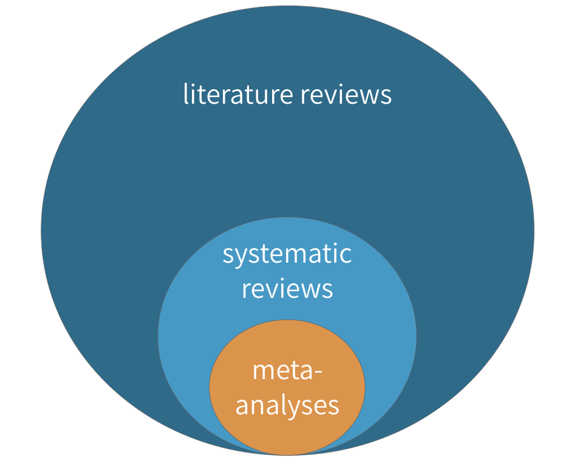

3 Developing Research Ideas
Actual footage of my first research meeting in grad school, via GIPHY.
In my experience as a former student and as a mentor, one of the most anxiety-producing moments in student life is when a new mentor says, “tell me about your ideas”. Why is this innocent prompt so terrifying? It might be because we have the wrong understanding of innovation and the origin of good ideas.
, by Steven Johnson. Also see his book, [*Ghost Map*](https://amzn.to/2DdExOu), a retelling of the story of John Snow and the 1854 outbreak of cholera in London.](images/wheregoodideas.jpg) Figure 3.1: Where Good Ideas Come From, by Steven Johnson. Also see his book, Ghost Map, a retelling of the story of John Snow and the 1854 outbreak of cholera in London.
Figure 3.1: Where Good Ideas Come From, by Steven Johnson. Also see his book, Ghost Map, a retelling of the story of John Snow and the 1854 outbreak of cholera in London.
In his book Where Do Good Ideas Come From?, Steven Johnson argues that good ideas are usually not eureka moments that go from zero to unified solutions in a flash, as we tend to imagine. Instead, good ideas are often the product of fertile environments where ideas are allowed to “connect, fuse, and recombine” over time. Have a listen.
I think two of Johnson’s insights are particularly relevant for us: the notion of the slow hunch and the adjacent possible. These concepts help to explain why generating research ideas can be so hard for students.
First, the student timeline is often hostile to innovation. Learning and assignments are compressed into semesters, but many ideas need more time to take shape. As Johnson writes:
Most great ideas first take shape in a partial, incomplete form. They have the seeds of something profound, but they lack a key element that can turn the hunch into something truly powerful…They start with a vague, hard-to-describe sense that there’s an interesting solution to a problem that hasn’t yet been proposed, and they linger in the shadows of the mind, sometimes for decades, assembling new connections and gaining strength.
Ideas take time to develop. This is the slow hunch concept. “But I have a research meeting with my mentor next Tuesday and she wants a list of ideas!!,” you say. Don’t panic. When you recognize that good ideas come from the accumulation of slow hunches, you will learn to enjoy the process. Your first idea will be the start of your journey, not the end. Your best ideas might not conform to this semester’s schedule, and that is OK.
Johnson borrows the metaphor of the adjacent possible from theoretical biologist Stuart Kauffman to illustrate the importance of connecting ideas.
The second insight is that we are always sitting on the edge of a breakthrough, but we need access to certain raw materials to unlock this discovery. This is the adjacent possible concept, which Johnson describes as follows:
Searching for the adjacent possible the night before your paper is due, via GIPHY
Think of [the adjacent possible] as a house that magically expands with each door you open. You begin in a room with four doors, each leading to a new room that you haven’t visited yet. Those four rooms are the adjacent possible. But once you open one of those doors and stroll into that room, three new doors appear, each leading to a brand-new room that you couldn’t have reached from your original starting point. Keep opening new doors and eventually you’ll have built a palace.
The first room is a metaphor for your initial understanding of a new topic. It is pretty empty because you are new, but your room has many potential doors to open—many strands of research to explore. When you open one door by searching the literature—and by connecting with other colleagues at talks, conferences, meet-ups—more doors appear. Figuring out which doors to walk through is a skill that comes with practice. Many literature searches can lead to what appear to be dead ends, but with each door you open, new hunches form. And when you have opened enough doors:
…one day [your hunches] are transformed into something more substantial: sometimes jolted out by some newly discovered trove of information, or by another hunch lingering in another mind, or by an internal association that finally completes the thought.
One suggestion is to adopt the “commonplacing” strategy for promoting discovery. It was all the rage in the Enlightenment Era. Read more about commonplace books in Good Ideas or in this 2010 lecture.
Johnson offers several suggestions for probing the adjacent possible and nurturing our slow hunches, pointing us to the importance of seeking out environments that will increase the likelihood that our ideas will collide with others. In this chapter, we will focus on how to open doors by searching the scientific literature.
3.1 Finding a Research Problem
Every study begins with a motivating research problem. A research problem is your study’s ikigai, its “reason for being”, to borrow a Japanese concept. A research problem should convey a clear reason for being, a clear sense of purpose. Typically, a research problem gets framed as the gap in our knowledge—a gap in the literature.
A defining characteristic of all research problems is that they are solvable (Leary 2012). To qualify as a research problem, we must be able to use systematic, public methods to gather and analyze data on the problem. For instance, research has shown that insecticide treated bed nets can prevent malaria infections in kids, but in many places kids are not sleeping underneath bed nets every night. Therefore, a good research problem could be that we do not know how to encourage families to adopt and use this effective method of prevention.
So how do you find research problems worth studying?
Once you have studied a field for a few years, the answer is easy: You have cultivated a list of journals, conferences, funders, and colleagues whom you follow to keep up with the latest developments and priorities. You probably wake up most mornings with new ideas to explore.
Let’s assume this does not describe you. So where do YOU start?
Do you have any personal or work experience that can shape your thinking? Returning to the example above, maybe you work for a community organization or government agency tasked with reducing the malaria burden in your region, and you have observed that families will accept free bed nets and use them to protect livestock. You have first hand experience with a real world problem. The next step is to learn how to design and conduct a studies to better understand the challenges or test solutions.
No experience? No problem. You are in good company. Most students I have mentored came to me with a general awareness about a health challenge, not a specific problem or research idea. “I’m interested in mental health”.
When you are just starting out, the key is to begin exposing yourself to ideas.
- Start reading the health and science sections of major publications like the New York Times and set news alerts for topics you find interesting
- Subscribe to newsletters from relevant professional associations or ‘learned societies’
- Attend research talks in-person or via online webinars hosted by universities, global health research organizations, or professional associations
- Look for experts active on social media
Above all else, start reading the scientific literature. A useful strategy is to visit the websites of the most popular journals in your discipline and browse recent issues. Not sure what journals to search? Check out Google Scholar’s “Top Publications” feature.
Figure 3.2: Google Scholar.
.](images/scholar.png)
Once you find a few articles of interest, try the following strategy for expanding your search and identifying gaps in the literature worth studying.
- Find the keywords: An article’s keywords often make great search terms. Look near the abstract.
- Read the Introduction: A good Introduction will frame gaps in our knowledge of a topic, so pull out a highlighter and get to work.
- Review the Discussion: The Discussion section may also hold new leads. Authors typically use the Discussion to link their study results to the existing literature to demonstrate how the results add to what is already known. A good Discussion section will also include limitations of the current study and might offer ideas for future research.
- Take note of the cited authors and journals: The Reference section may hold clues to your next great find. Search for more work by these authors and see what else these journals are publishing.
3.2 Searching the Literature
As you increase your exposure to research ideas and become familiar with journals that publish interesting work, you will be ready to begin searching the literature.
3.2.1 SELECTING A DATABASE
Most databases offer the option to create an account and save search strategies and results. This makes it easy to retrace and improve your search over time.
Your developing research interests will dictate where you should search. For biomedical and clinical research, your first stop should be PubMed. PubMed is a fantastic free resource from the US National Library of Medicine that searches the MEDLINE database. For interdisciplinary science and social science research, the Web of Science and Scopus databases are good choices, but both require paid subscriptions; check your local library for access. A free alternative is Google Scholar. Research librarians are an excellent resource to determine whether other databases are suitable for your topic (see here for a comprehensive list of databases).
3.2.2 GENERATING SEARCH TERMS
Once the proper database(s) is identified, specific search terms are needed. These usually coincide with the keywords published in related articles.
One of the reasons PubMed/MEDLINE is a great (free!) resource is that all articles indexed in the database are tagged by a team of indexers with at least a bachelor’s degree in a biomedical science. So unlike Google Scholar that only searches the text of articles, PubMed/MEDLINE also searches human-tagged meta-data.
When searching PubMed/MEDLINE, it is often helpful to look up the correct MeSH terms for your topic. MeSH, which stands for “Medical Subject Headings,” is a controlled vocabulary thesaurus that is used by a team of specialists at the National Library of Medicine to index articles in PubMed/MEDLINE. This thesaurus is helpful because there are many ways to refer to the same phenomenon. For instance, the MeSH term for “breast cancer” is “breast neoplasm.” A search for “breast neoplasm” in PubMed actually searches more than 30 entry terms, such as “Tumors, Breast”, “Mammary Neoplasms, Human”, and “Carcinoma, Human Mammary”.
A simple search for “breast neoplasm” will return a few hundred thousand results, so as you refine your research interests, you can add search terms and refine your strategy. The mnemonic PICO might help, especially if you are interested in clinical research.
| P | Patient, Population, or Problem |
| I | Intervention, Prognostic Factor, or Exposure |
| C | Comparison |
| O | Outcome |
Prognostic factor refers to covariates that could influence the prognosis of the patient. An exposure would be something that we think might increase the risk of an outcome.
PICO stands for Population/Problem, Intervention, Comparison, and Outcome. Let’s use PICO to develop a focused, searchable research question on preventing malaria during pregnancy.
The problem is malaria infections, and our population of interest is pregnant women living in malaria-endemic areas.
Not every clinical question involves testing of a treatment or intervention, but we will focus on these types of questions in this book. Let’s say we are interested in malaria chemoprevention, the use of an antimalarial medicine to prevent malaria infection.
The “C” in PICO, comparison, answers the question, “compared to what?” Chemoprevention compared to what? Maybe we are interested in comparing the preventive effects of an antimalarial medicine compared to a placebo.
The outcome is our target. In this example, we are interested in whether chemoprevention prevents malaria infection. We can define this more specifically as the presence of parasitemia, the presence of malaria parasites in the blood.
Combining all of this information yields a research question like this one:
Among pregnant women living in malaria-endemic areas, is chemoprevention more effective than a placebo at preventing parasitemia?
3.2.3 DEVELOPING A SEARCH STRATEGY
Once you have identified initial search terms, it is time to build a query. Query construction is an iterative process, full of trial and error.
Figure 3.3: Boolean operators: AND, OR, NOT

Some basic Boolean operators are needed to conduct effective searches: AND, OR, NOT. For instance, consider the search PubMed runs when the terms “malaria OR pregnancy” are entered:
("malaria"[MeSH Terms] OR "malaria"[All Fields]) OR ("pregnancy"[MeSH Terms] OR "pregnancy"[All Fields])
These four terms are combined with OR, meaning we keep results that match any of these terms. PubMed returns more than 1 million results.
Of course, it would make more sense to search for “malaria AND pregnancy,” instead of “malaria OR pregnancy”, as we are interested in malaria among pregnant women:
("malaria"[MeSH Terms] OR "malaria"[All Fields]) AND ("pregnancy"[MeSH Terms] OR "pregnancy"[All Fields])
To further limit the results to humans, we could add AND “humans”[MeSH Terms] to the end.
(“malaria”[MeSH Terms] OR “malaria”[All Fields]) AND (“pregnancy”[MeSH Terms] OR “pregnancy”[All Fields]) AND “humans”[MeSH Terms]
The first two terms and last two terms are combined separately with OR. These combinations are then combined with AND (notice the use of parentheses to segment the operations), shrinking the pool of results by 99%. The AND operator will always maintain or decrease the number of results.
Combining the components of the PICO questions and Boolean operators can be very useful. Consider our research question once more:
Among pregnant women living in malaria-endemic areas, is chemoprevention more effective than a placebo at preventing parasitaemia?
5 Tips for Searching PubMed. Duke University Medical Center Library & Archives (2012). https://tinyurl.com/y66y7uvx
Here is a reasonable search strategy in plain English:
- P: (pregnancy
ORpregnant women)ANDmalaria endemic - I:
ANDchemoprevention (to search for specific drugs, string them together withORs) - C:
ANDplacebo - O:
ANDparasitaemia
3.2.4 ACCESSING JOURNAL ARTICLES
Scientific publishing is good business. Private and public donors fund research, authors write up what they learn and give away their work for free, other scientists sign up to review the work pro bono, and libraries pay large sums of money to give members access the articles. Everyone else is left to pay out of pocket per article. No wonder profit margins have exceeded some of our most innovative companies, such as Apple, Facebook, and Amazon.
There has been a move toward open access in recent years, but too much knowledge remains trapped behind paywalls. If you are affiliated with a university, you probably have access to a wide range of journals. If you are searching the literature from a campus IP address or VPN, you might never come across a request for money. If you do, the best approach is to ask a librarian if they can help you access the article through inter-library loan or other means.
Here is what you can do if find yourself on the other side of a paywall looking in:
- Search for the article in Google or Google Scholar and include the search term “pdf”. This might help you locate a copy outside the paywall.
- Search free cloud services like ResearchGate to see if the authors have posted a pre-publication copy.
- Try a browser extension like unpaywall to see if there is an open access version of the paper you seek.
- Try emailing the author directly or contacting them through a service like ResearchGate. You will find that most authors are willing to share their work with you. Usually searching for the author’s name and university will bring up a profile with contact information.
3.2.5 USING A REFERENCE MANAGER
The importance of using a software program for managing search results and references cannot be overstated. The manual collation and assembly of a bibliography is, simply put, a colossal waste of time.
You can choose from several reference managers. Zotero is free and open source, which makes it a good choice for collaborations. Most programs share these core features:
- Easily imports references from databases like PubMed; moves from the search results to the reference manager instantly
- Automatically retrieves full-text PDFs
- Syncs PDFs to tablets and phones
- Connects to word processing software; inserting references in papers is easy
- Automatically creates bibliographies based on works cited
- Instantly reformats in-text citations and references to different styles, such as APA, AMA, or Harvard
- Shares collections by automatically sync-ing via the Cloud to facilitate collaboration.
- Easily exports references to other reference managers
3.3 Systematic Reviews and Meta-Analyses
Now that you know a bit about how to search the literature for primary research, I can share a secret: There might be a better way.
If you are interested in the impact (efficacy) of interventions—and I use the term broadly to mean clinical treatments, prevention interventions, social programs, and policies—then there might be a fast track to your learning called a systematic review.
 Figure 3.4: Literature reviews, systematic reviews, and meta-analyses
A systematic review is a type of literature review in which the goal is to summarize all of the relevant evidence about the impact of an intervention on some outcome. Scholars who conduct systematic reviews register their research protocols in advance to clearly state the literature search strategy, rules for including and excluding studies, and a plan for the analysis. Some systematic reviews include a meta-analysis, which is quantitative technique for combining the results of multiple studies to estimate a pooled effect size that takes variations in study size and quality into consideration.
| Systematic Reviews | Literature Reviews |
|---|---|
| The goal of a systematic review is to be comprehensive and to include every relevant article. | Literature reviews, on the other hand, do not follow such rigid or explicit methods. They are not expected to be exhaustive. |
| For this reason, most systematic reviews are conducted by teams, given the large scope of the data initially collected for most research topics. | Literature reviews can usually be conducted by a single person rather than a team |
| Like any other aspect of research, however, systematic reviews must define and follow a method that can be replicated. | Literature reviews, on the other hand, don’t have to follow such rigid methods or make the methods explicit. |
| Most systematic reviews preregister the research plan, meaning that the authors submit their planned methods to a registry like PROSPERO prior to conducting the study. Preregistration gives other researchers confidence that the team is not selectively choosing advantageous results at the end to make an interesting paper. This registration informs other researchers that a group is working on a certain area of study, which can discourage duplicate research efforts that may, therefore, fail to be published. | Not the case for literature reviews. |
| These preregistration plans include a specific search strategy using specific search terms for individual scholarly databases so other researchers can recreate the search. | It’s a good idea to do the same for a literature review, even if not a strict requirement. |
| Importantly, both inclusion criteria and exclusion criteria must be clearly outlined when a systematic review is undertaken. One inclusion criteria might be that assignment to study arms had to be random; an exclusion criteria might be all studies without a control arm that used a placebo. Most systematic searches specify several, if not many, criteria regarding which studies to include or exclude. Team members screen the search results and sort them according to these criteria, beginning with titles and abstract reviews and moving to full-text reviews later. | Screening for a literature review is typically less intensive. |
| In systematic reviews, specific details are extracted from every study included, such as numbers of participants, methods, analysis techniques, and key outcomes. | An annotated bibliography might suffice for a literature review. |
| In addition, the research team formally assesses the quality of each study, including the potential for bias, and these assessments are considered when the results are synthesized. | This process is more ad hoc for literature reviews. |
Where to find systematic reviews
Three excellent sources for finding systematic reviews (and meta-analyses) in global health are the Cochrane Library, the Campbell Collaboration, and 3ie. Many of the reviews in these databases can be accessed by searching within PubMed using the Clinical Queries feature.
How to read systematic reviews
Abstract and plain language summary
Cochrane reviews follow a standard format that can look overwhelming at first, but this format actually makes them quite easy to read and understand. As with most journal articles, Cochrane reviews begin with an Abstract and a Plain language summary, which can be helpful for newcomers to a the topic. For example, Radeva-Petrova et al. (2014) include the following passage in their plain language summary:
For women in their first or second pregnancy, malaria chemoprevention prevents moderate to severe anemia (high quality evidence); and prevents malaria parasites being detected in the blood (high quality evidence). It may also prevent malaria illness. We don’t know if it prevents maternal deaths, as this would require very large studies to detect an effect.
This paragraph brings us up to speed with the state of the science for preventing malaria and its effects among pregnant women living in malaria-endemic areas (and points to some gaps in the literature). Google does not filter the evidence in this manner, and starting with systematic reviews pays off almost every time.
Summary tables
Next come the Summary tables, such as the one presented below from Radeva-Petrova et al. (2014). These tables provide enough information to make an initial judgment about the study.
Figure 3.5: Malaria chemoprevention for pregnant women living in endemic areas. Source: Radeva-Petrova et al. (2014), http://bit.ly/1U3q2Oj

First, the comparative risk column shows the assumed risk among the control group. For instance, the risk of antenatal parasitemia is 286 events per every 1,000 people. This is the median control group risk across 8 trials of 3,663 women. The relative risk is 0.39. Recall that this is the pooled, or “meta,” effect size. The corresponding risk among the intervention group is 286*0.39=111 per 1,000 people.1 For more information on summary tables, see here.
As shown in the final column, the quality of this evidence is rated “high.” Here, the authors are referring to GRADE criteria, a systematic approach to evaluating the quality of empirical evidence:
- High—Further research is very unlikely to change our confidence in the estimate of effect.
- Moderate—Further research is likely to have an important impact on our confidence in the estimate of effect and may change the estimate.
- Low—Further research is very likely to have an important impact on our confidence in the estimate of effect and is likely to change the estimate.
- Very Low—We are very uncertain about the estimate.
Background
The abstract contains much important information, such as summary text and tables, and sometimes even forest plots. The abstract is often followed by a Background section, typically a short overview that explains which knowledge gaps the review is intended to fill. Radeva-Petrova et al. (2014) have used this section to present a conceptual framework for malaria prevention during pregnancy.
Figure 3.6: Drugs for preventing malaria in pregnancy: conceptual framework. Source: Radeva-Petrova et al. (2014), http://bit.ly/1U3q2Oj

Methods
The Methods section details how the review was organized and conducted. The purpose of this section is to provide enough detail to enable other researchers to replicate the review. These are the main components:2 See the PRISMA Statement for a checklist of components to include in each section.
- A description of the population and intervention
- The key outcomes of interest
- The search strategy and databases
- Inclusion and exclusion criteria for studies reviewed
- Procedures for extracting information from each study
- Procedures for assessing bias and conducting a meta-analysis (if one is included)
Results
The Results section typically begins with details about how many primary articles were identified, screened, and excluded. This information is typically presented graphically in a flow diagram like the one below from Radeva-Petrova et al. (2014).
Figure 3.7: Study flow diagram. Source: Radeva-Petrova et al. (2014), http://bit.ly/1U3q2Oj

Once the included studies are identified, the review authors usually report on the quality of the evidence presented in each study. The nature of these sources of bias are discussed in a later chapter, but the heatmaps are introduced here. Although they may appear complex at first, they provide a useful summary of bias. Basically, the green circles indicate that the authors believe that the research is not affected by bias; conversely, red indicates the likely presence of bias, in the authors’ judgment. The less bias, i.e., the more green circles, the higher the quality of the studies included in the review.
Figure 3.8: Risk of bias summary: review authors’ judgements about each risk of bias item for each included trial. Source: Radeva-Petrova et al. (2014), http://bit.ly/1U3q2Oj

Discussion and conclusions
The discussion section provides a short summary of the findings, commentary on the quality of the evidence, and thoughts about what the review adds to the existing literature on the topic. The discussion tends to be short relative to the size of the overall review.
The discussion section is often followed by a brief statement of the authors’ conclusions. Here, the authors frame the overall results in terms of their implications for practice and research.
Radeva-Petrova et al. (2014) conclude:
Routine chemoprevention to prevent malaria and its consequences has been extensively tested in RCTs, with clinically important benefits on anemia and parasitaemia in the mother, and on birth-weight in infants.
Simply put, the final conclusion of this review is “chemoprevention works.”
Appendices
Often, appendices include table after table of data included and (sometimes) excluded studies. They are often followed by dozens of forest plots if the systematic review includes a meta-analysis with several outcomes or populations of interest. Reading the appendices provides a sense of the mechanics behind a systematic review. Radeva-Petrova et al. (2014) wrap up on page 120!
3.3.1 META-ANALYSIS
A meta-analysis is a quantitative approach to reviewing research in which the results from multiple studies are combined to estimate an overall effect size. The results of a meta-analysis are typically summarized in a forest plot like the one shown in Figure 3.9. Let’s take a look at this helpful guide from Ried (2006) that breaks it all down.
Figure 3.9: Source: Ried (2006), http://bit.ly/2j9pfSz

A forest plot summarizes the results of several studies that measured the effect of the same intervention on the same outcome. One study result is described and plotted per row, and the overall effect (i.e., the “pooled” or “meta” effect) of all the studies is displayed at the bottom.
The study sample is divided into an intervention arm and a control arm, presented in the n/N format where n represents the number of participants who experienced a certain outcome and N is the total number of participants in the study arm. For example, 141 were people assigned to the intervention group in Study A. Of these 141 people, 1 person experienced the adverse outcome that the forest plot summarizes.
Next, a plot of the effect size and the confidence interval is created. An effect size is a measure of the strength or magnitude of a relationship, such as the relationship between taking a medicine and experiencing a bad outcome. This guide shows a specific type of effect size: relative risk. Each study’s point estimate of the relative risk is plotted around a line of “no effect.” A risk of 1 means that there is no difference between the intervention and control groups. When the outcome is something bad, like death, the intervention should be designed to reduce the risk, which is represented by a risk ratio less than 1.
We talk about “estimates” of the effect because research can only approximate the truth. Every estimate has some uncertainty. In a forest plot, uncertainty is represented by confidence intervals.
The size of the effect estimate is based on how much the study contributed to the meta-analysis. All studies are not created equal, and the weight parameter lets researchers account for these differences in the analysis.
Each estimate point is surrounded by a confidence interval (typically 95%) that is summarized numerically in the final column. Basically, if a study is repeated 100 times, the effect size is expected to be within this interval 95% of the time. When this interval crosses the line of no effect, the effect could be null or could even run in the opposite direction. In this case, the result is not “statistically significant.”
Finally, the test for heterogeneity is presented toward the bottom. Heterogeneity means diversity (and is the opposite of homogeneity). Heterogeneity in a forest plot refers to the diversity in effect size estimates across studies. Heterogeneity complicates the interpretation of a meta-analysis; it signals that we might be comparing apples and oranges. For instance, the intervention may work differently in different contexts, and the included studies were gathered from all over the world. In such a case, it might not make sense to attempt to determine one overall meta effect size from a comparison of the studies.
The first way to assess heterogeneity is to consider the plots. Do the confidence intervals from each study form a vertical column, even if the point estimates shift between them? If so, heterogeneity is probably low. Heterogeneity can also be summarized numerically. Two estimates of heterogeneity are often presented: chi-square (χ2) and I^2, which is generally preferred. Values greater than 75% may indicate that a change in the meta-analysis method (random vs fixed effects) is needed. If heterogeneity is reported with a high I^2 value, authors should address this in the methods or limitations section of the study.
Lewis and Clarke (2001) discovered that the first forest plot was published in 1978, and first used in a meta-analysis in 1982. The name lagged behind, appearing first in 1996, apparently referring to the tree-line optics typical of most forest plots.
Example
For example, consider the meta-analysis by Radeva-Petrova et al. (2014). The authors reviewed 17 studies of the effects of chemoprevention on pregnant women living in malaria-endemic areas. With their review, they set out to answer this basic question:
Do women who take antimalarial medication during pregnancy have a lower risk of getting infected with malaria, and thus a lower risk of experiencing the bad health outcomes associated with malaria?
One indicator of malaria infection is parasitemia, or the presence of malaria parasites in the blood. If chemoprevention has some preventive effect, less parasitemia should be observed among women exposed to the medication (i.e., treatment). Few interventions are 100% effective, so scientists often talk about reductions in the risk of bad outcomes like malaria.
The forest plot shown in Figure 3.10 displays the results of 10 studies (8 trials) of cases of parasitemia among 3,663 pregnant women who were randomized to an intervention group (n=2,053) that received a preventive antimalarial drug or to a control group (n=1,610) that received a placebo (no drug).
Figure 3.10: Source: Radeva-Petrova et al. (2014), http://bit.ly/1U3q2Oj

Details about each study are reported in separate rows in this figure. The study by Shulman et al. (1999) in row 6 found that 30 of the 567 women in the intervention group tested positive for parasitemia (i.e., malaria). Comparing this number to 199 of the 564 woman in the control group yields a risk ratio of 0.15, i.e., (30/567)/(199/564) = 0.15. In other words, the chemoprevention reduced the risk of parasitemia by 85%. This is a huge effect size!
The effect size for each study is presented in the far-right column and is depicted graphically in the size of the point estimate square. All point estimates fall to the left of the line of no effect (<1), thus indicating a favorable effect of the chemoprevention intervention, i.e., reduced risk of parasitemia. A risk ratio of 1 would indicate no difference in risk, and a ratio >1 would mean the risk was higher among the intervention group, thus favoring the control group (with no treatment). The overall (pooled) effect size is 0.39, or a 61% reduction in the risk of parasitemia.
Calculating this pooled effect size is not as simple as averaging the effects of the 10 studies because the studies were not given equal weight, as shown in the “weight” column. For instance, Greenwood et al. (1989) had a sample size of only 34 children (i.e., 21+13=34). As a result, the effect size estimate is very noisy. The 95% confidence interval is very large and crosses 1. Consequently, the weight of this study is only 6.7%, which is lower than the others. Simply put, studies with weaker research designs, such as this one, have less weight in the pooled analysis.
A single forest plot provides a summary of the best available evidence and an estimate of the overall effect size, along with uncertainty intervals. A Google search cannot begin to offer that!
Exploring meta-analysis
3.4 Why Does Any of This Matter?
Most of the time, literature searches are not conducted to perform a research-related systematic review. Mostly, literature searches offer the most expedient means of staying current with developments in a specific field and of illuminating gaps in the collective knowledge. Literature searches lead to FINER research questions: questions that are Interesting, and Novel, and Relevant. Literature also provides insight into how researchers of a specific topic or in a particular field conceptualize study designs, plan study measurement, and report results.
Searches, quick data evaluations, and rapid integration of study summaries take practice. For researchers early in the process, using effective search strategies can save a great deal of time and energy.
Page built: 2019-05-30